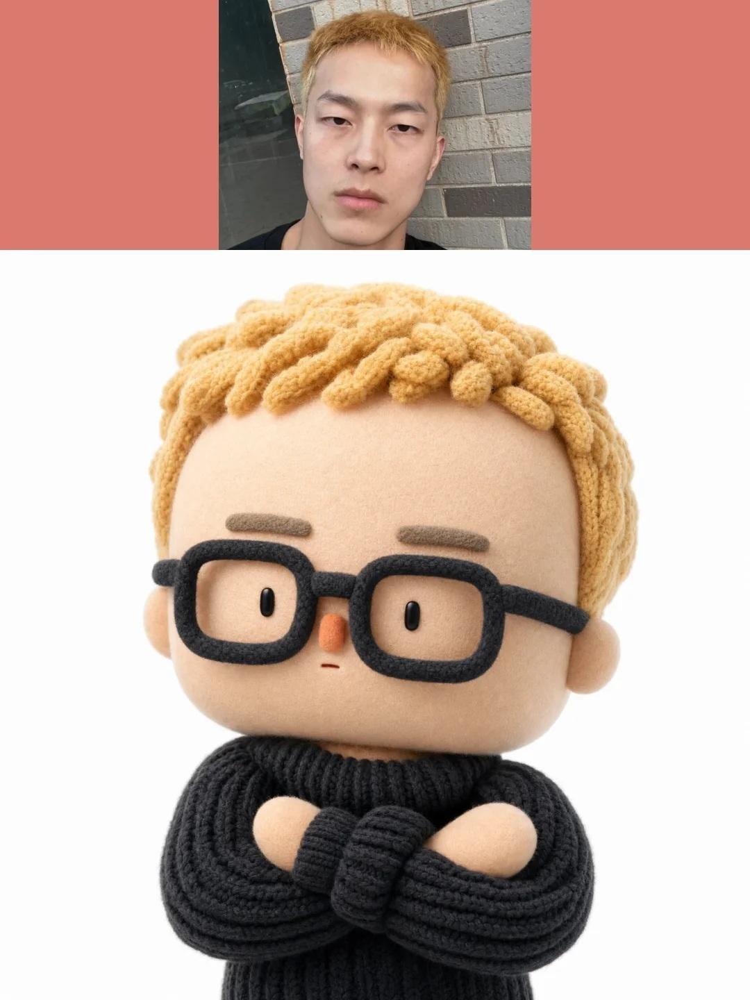
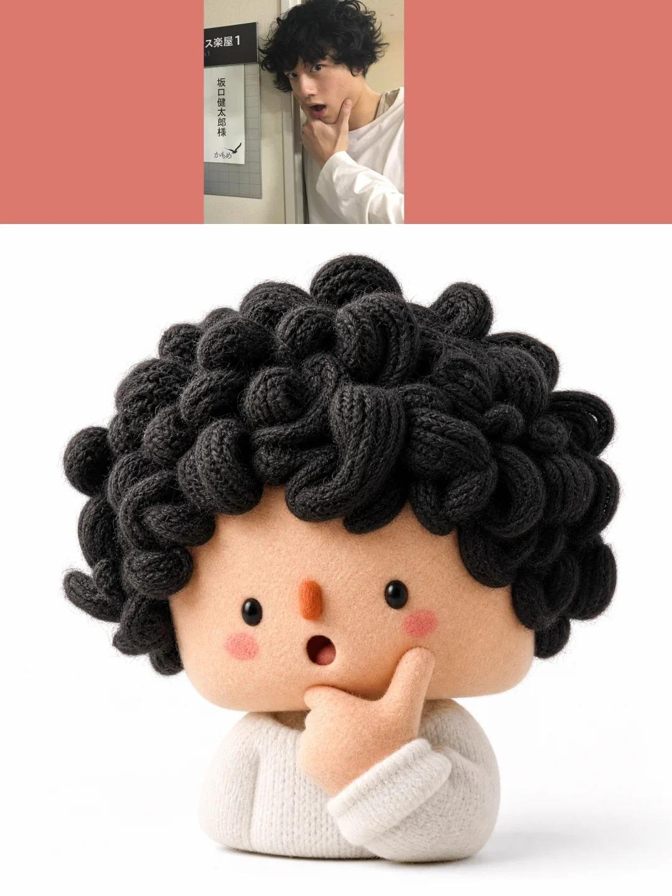

针织定格人偶
把人像照片转成针织材质的定格动画玩偶胸像，毛线纹理和表情都很细。
| 作者 | Oogie @oggii_0 |
|---|---|
| 平台 | X |
| 模型 | GPT Image 2.5 |
| 点赞 | 323 |
| 发布 | 2026-10-26 |
| 画风 | 黏土定格 3D卡通 |
| 地域氛围 | 无明显地域 |
| 题材 | 日常生活 |
| 情绪 | 温暖治愈 |
提示词 · 来自正文
Task: Create a 1:1 Square 3D Textile Art Toy Bust from the Attached Real Photograph Use the attached real photograph to create a square 1:1, stylized 3D textile art toy bust. Interpret the inputs by their roles: the real photograph is the source of identity and content, while the minimalist white-background toy image is the style reference. Their order does not matter. Preserve the subject’s identity, facial expression, pose, and spatial relationships between objects. Reconstruct the subject as an exaggerated, humorous designer collectible toy. Do not apply a simple fuzzy or plush filter to the original photograph. ## 1. Style Reference Borrow only these visual characteristics from the reference image: - An oversized, horizontally broad head with rounded corners. - Extremely small, centrally concentrated facial features with generous facial negative space. - Sculptural knitted forms, clustered yarn shapes, and soft textile construction. - Subtle asymmetry for a handmade, designer-toy appearance. - Contrast between fine-grained flocked surfaces and chunky knitted textures. - A deliberate primary and accent color hierarchy. - Clean, minimalist white studio photography. Do not inherit the reference character’s body, pose, hairstyle, hat, glasses, clothing, props, or colors. ## 2. Subject and Identity Preservation The real photograph is the exclusive source of visible content. Reproduce only the body parts, hairstyle, clothing, accessories, objects, poses, and contact relationships that are actually visible in the original image. Never invent or complete details that extend beyond the photograph. Identify 2–5 distinctive identity anchors from the source image. Exaggerate 1–2 of them while simplifying the remaining details to maintain recognizability. - **Head:** Transform it into a broad, thick, rounded rectangular block or a short cylindrical form with softened corners. - **Eyes:** Use tiny black beads or capsule-shaped forms. - **Nose:** Reduce it to a small, rounded rectangular block. - **Mouth:** Preserve the original expression using a short line or a small opening, as appropriate. - **Hair:** Reconstruct it as large yarn loops, chunky knitted clusters, or sculptural bundles of wool. - **Hands:** Strictly preserve the number of visible hands. If no hands are visible, add none. If one hand is visible, reproduce only one. Preserve its orientation, sleeve cuff, and contact with the original object. - **Text and logos:** Convert any visible lettering or branding into illegible woven or knitted texture rather than readable text. ## 3. Composition Create a compact, close-up head-and-shoulders composition. - The head should occupy approximately 75–90% of the image width. - Compress the body into a small supporting form, retaining only the essential visible pose, gestures, and objects. - Allow elements to be cropped by the image boundaries when necessary. - Do not add body parts or anatomy extending beyond the original photograph. - Maintain a clear silhouette and recognizable relationships between the subject and any visible objects. ## 4. Visual Style **Stylized 3D textile art toy, oversized head, tiny concentrated facial features, sculptural knitted forms, micro-flocked surfaces.** Prioritize abstract exaggeration over photorealism while preserving recognizability through the subject’s silhouette, hairstyle, facial expression, pose, clothing, and visible objects. The result should feel like a thoughtfully designed, premium collectible art toy rather than a conventional 3D cartoon character. ## 5. Color Palette Automatically develop a cohesive palette of 3–5 colors, including: - A dominant primary color. - A contrasting accent color with a clear difference in temperature or brightness. - One or more supporting colors. - A neutral color for balance. Non-identity-defining elements may be recolored to improve visual harmony. Preserve the essential identity cues of the original subject while avoiding monotonous palettes, excessive neutrals, evenly distributed rainbow colors, or repetitive mechanical stripes. ## 6. Materials, Texture, and Lighting Use distinct textile treatments for different surfaces: - **Face, hands, and small components:** Fine, dense micro-flocked or short-fiber felt surfaces. - **Hair, hats, and clothing:** Chunky knitting, crochet structures, large yarn loops, and clustered wool forms, applied only where those elements exist in the original photograph. Create visible material contrast between the fine-grained felt and the coarser knitted structures. The surfaces should appear sculpted from real textile materials, not covered with a generic fuzzy filter. Use a subtly warm-white seamless background, soft high-key studio lighting, gentle highlights, and short, delicate shadows. Keep the presentation clean, bright, and premium. ## 7. Strict Exclusions - No photorealistic eyeballs, detailed nostrils, realistic lips, natural skin texture, or individual hair strands. - No copying the reference character’s identity or distinctive design elements. - No invented body parts, hand gestures, accessories, clothing, or props absent from the source photograph. - No conventional 3D cartoon aesthetics. - No plastic, polymer clay, wax figure, or long-pile plush appearance. - No readable text, logos, or branding. - No rooms, environmental scenes, or complex backgrounds. - No generic fuzzy overlay that obscures the underlying sculptural textile construction. ## Final Priority **The source photograph determines WHAT is depicted. The style reference determines HOW it is depicted.** Deliver a polished, humorous, exaggerated 1:1 square 3D textile art toy bust with a distinctive oversized head, tiny facial features, sculptural yarn construction, contrasting textile textures, a deliberate color palette, and clean white studio lighting. Preserve the original subject’s identity and visible content without inventing anything beyond the photographic evidence.